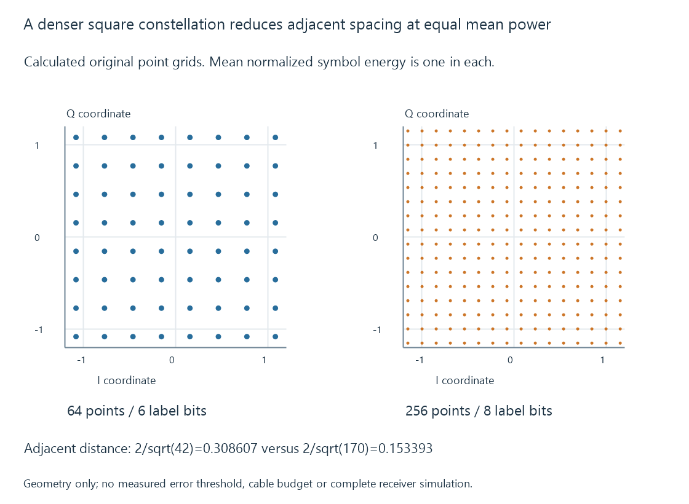

DVB-C cable television
DVB-C specifies a digital cable transmission arrangement whose QAM modulation and framing recover service data before access and media decoding are established.
DVB-C defines framing, channel coding and modulation for digital cable systems. Its QAM arrangement lets a receiver recover data from a compatible cable carrier.
It does not, by itself, describe whether a programme is encrypted or which video codec it contains.
More constellation alternatives label more bits
QAM uses amplitude/phase relationships represented by a constellation of possible symbol points.
For an original mapping exercise:
| Alphabet | Alternatives | Bits needed to label a point |
|---|---|---|
| 64-QAM | 64 | 6 |
| 256-QAM | 256 | 8 |
At a declared five million symbols per second, the raw label rates are thirty and forty Mbit/s respectively.
These calculations omit error coding, framing and other transmission structure. They are not the useful programme capacity of an installed cable service.
Point separation affects recovery
Consider an original ideal square-constellation model normalized to the same unit mean symbol power.
An eight-by-eight grid with odd levels −7 through 7 has mean unnormalized energy 42. A sixteen-by-sixteen grid with odd levels −15 through 15 has mean energy 170.
Their normalized adjacent-point distances are:
64-point grid: 2 / √42 = 0.308607
256-point grid: 2 / √170 = 0.153393

The denser alphabet places neighbouring alternatives closer under this normalization. Noise or distortion can consequently move a received point toward another decision region more easily.
This is a geometric teaching model, not a measured error threshold or a complete DVB-C receiver simulation. Coding and the actual receiver/channel also influence recovery.
The service can have an access requirement
A demodulator recovering a cable transport has answered the transmission question. It has not necessarily established a usable protected-service path.
Clear QAM addresses relevant unencrypted cable services. Encrypted channels addresses the additional access/protection relationship.
Those conditions should not be inferred merely from a QAM modulation label.
Emby needs the selected recovered components
The source/backend identifies the programme and supplies its encoded streams. Client/server preparation then depends on their actual representations.
See Also
- Cable television
- Clear QAM cable television
- Encrypted TV channels and supported playback paths
- Broadcast service identifiers